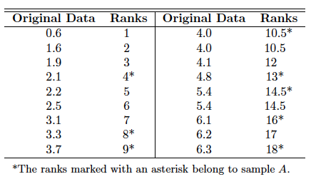
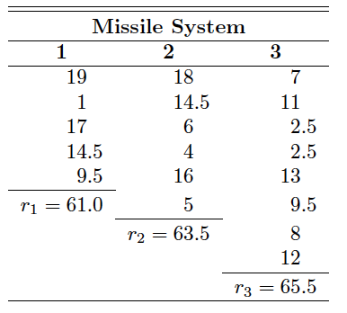

X <- 3
n <- 10
p <- 1/2
2* pbinom(X,n,p)[1] 0.34375Most of the hypothesis-testing procedures are based on the assumption that the random samples are selected from normal populations. Fortunately, most of these tests are still reliable when we experience slight departures from normality, particularly when the sample size is large. Traditionally, these testing procedures have been referred to as parametric methods.
Here we consider a number of alternative test procedures, called nonparametric or distribution-free methods, that often assume no knowledge whatsoever about the distributions of the underlying populations, except perhaps that they are continuous.
Nonparametric, or distribution-free procedures, are used with increasing frequency by data analysts. There are many applications in science and engineering where the data are reported as values not on a continuum but rather on an ordinal scale such that it is quite natural to assign ranks to the data.
The sign test is used to test hypotheses on a population median, denoted as \(\tilde{\mu}\).
In the case of many of the nonparametric procedures, the mean is replaced by the median as the pertinent location parameter under test.
Given a random variable \(X\), \(\tilde{\mu}\) is defined such that
\[P(X >\tilde{\mu}) \le 0.5, \qquad \text{and} \qquad P(X< \tilde{\mu}) \le 0.5.\]
In the continuous case, \[P(X > \tilde{\mu}) = P(X< \tilde{\mu})=0.5.\]
In testing the null hypothesis \(H_0\) that \(\tilde{\mu} = \tilde{\mu}_0\) against an appropriate alternative, on the basis of a random sample of size \(n\), we replace each sample value exceeding \(\tilde{\mu}_0\) with a plus sign and each sample value less than \(\tilde{\mu}_0\) with a minus sign.
The appropriate test statistic for the sign test is the binomial random variable \(X\), representing the number of plus signs in our random sample. If the null hypothesis \(\tilde{\mu} = \tilde{\mu}_0\) that is true, the probability that a sample value results in either a plus or a minus sign is equal to \(1/2\). Therefore, to test the null hypothesis that \(\tilde{\mu} = \tilde{\mu}_0\) , we actually test the null hypothesis that the number of plus signs is a value of a random variable having the binomial distribution with the parameter \(p = 1/2\).
Example 1. The following data represent the number of hours that a rechargeable hedge trimmer operates before a recharge is required: 1.5, 2.2, 0.9, 1.3, 2.0, 1.6, 1.8, 1.5, 2.0, 1.2, 1.7. Use the sign test to test the hypothesis, at the 0.05 level of significance, that this particular trimmer operates a median of 1.8 hours before requiring a recharge.
Hypotheses： \[ H_0: \tilde{\mu} = 1.8, \qquad H_1: \tilde{\mu} \ne 1.8.\]
Confidence Level: \(\alpha = 0.05\)
Test Statistic: Binomial variable \(X\) with \(p =\frac{1}{2}\)
Computations: \(+\) denotes the value exceeds 1.8 and \(-\) for the value less than 1.8 and disregarding the value is \(1.8\). Thus we have the following sequences. \[ - \qquad + \qquad - \qquad - \qquad + \qquad - \qquad - \qquad + \qquad - \qquad -\] Here \(n = 10, x = 3\) and \(n/2 = 5\). To calculate the p value
We need DescTools package.
One-sample Sign-Test
data: x
S = 3, number of differences = 10, p-value = 0.3438
alternative hypothesis: true median is not equal to 1.8
98.8 percent confidence interval:
1.2 2.0
sample estimates:
median of the differences
1.6 Example 2 A taxi company is trying to decide whether the use of radial tires instead of regular belted tires improves fuel economy. Sixteen cars are equipped with radial tires and driven over a prescribed test course. Without changing drivers, the same cars are then equipped with the regular belted tires and driven once again over the test course. The gasoline consumption, in kilometers per liter, is given in below. Can we conclude at the 0.05 level of significance that cars equipped with radial tires obtain better fuel economy than those equipped with regular belted tires?
Hypotheses： \[ H_0: \tilde{\mu}_1 - \tilde{\mu}_2 =0, \qquad H_1: \tilde{\mu}_1 - \tilde{\mu}_2 >0.\]
Confidence Level: \(\alpha = 0.05\)
Test Statistic: Binomial variable \(X\) with \(p =\frac{1}{2}\)
Computations: \(+\) denotes the positive difference and \(-\) for the negative difference vand disregarding two zero differences. Thus we have the following sequences. \[ + \qquad - \qquad + \qquad + \qquad - \qquad + \qquad + \qquad + \qquad + \qquad + \qquad + \qquad + \qquad - \qquad +\]
Here \(n = 14, x = 11\) and \(n/2 = 7\). To calculate the p value
Dependent-samples Sign-Test
data: RadialTires and BeltedTires
S = 11, number of differences = 14, p-value = 0.02869
alternative hypothesis: true median difference is greater than 0
96.2 percent confidence interval:
0 Inf
sample estimates:
median of the differences
0.1 A paint supplier claims that a new additive will reduce the drying time of its acrylic paint. To test this claim, 12 panels of wood were painted, one-half of each panel with paint containing the regular additive and the other half with paint containing the new additive. The drying times, in hours, were recorded as follows:
Using \(\alpha = 0.05\).
pbinom to calculate the p value. What’s your decision.Sign Test to perform a sign test. What’s your conclusion?When we are interested in testing equality of means of two continuous distributions that are obviously nonnormal, and samples are independent (i.e., there is no pairing0 of observations), the Wilcoxon rank-sum test or Wilcoxon two-sample test is an appropriate alternative to the two-sample t-test.
We shall test the null hypothesis \(H_0\) that \(\tilde{\mu}_1 = \tilde{μ}_2\) against some suitable alternative.
Select a random sample from each of the populations. Let \(n_1\) be the number of observations in the smaller sample, and \(n_2\) the number of observations in the larger sample. When the samples are of equal size, \(n_1\) and \(n_2\) may be randomly assigned.
Arrange the \(n_1 + n_2\) observations of the combined samples in ascending order and substitute a rank of \(1, 2,\cdots, n_1 + n_2\) for each observation. In the case of ties (identical observations), we replace the observations by the mean of the ranks that the observations would have if they were distinguishable. Similar to the Sign Test.
The sum of the ranks corresponding to the \(n_1\) observations in the smaller sample is denoted by \(w_1\). Similarly, the value \(w_2\) represents the sum of the \(n_2\) ranks corresponding to the larger sample. We can easily know \[w_1 + w_2 = \frac{(n_1+n_2)(n_1+n_2+1)}{2} \Longrightarrow w_2 =\frac{(n_1+n_2)(n_1+n_2+1)}{2} -w_1. \]
In actual practice, we usually base our decision on the value \[u_1 = w_1-\frac{n_1(n_1+1)}{2} \qquad u_2 = w_2-\frac{n_2(n_2+1)}{2}\qquad u = \min(u_1,u_2).\]
We have
\[ H_0: \tilde{\mu}_1 = \tilde{\mu}_2, \qquad H_1:\begin{cases} \tilde{\mu}_1 < \tilde{\mu}_2 & \text{ Compute } u_1\\ \tilde{\mu}_1 > \tilde{\mu}_2 & \text{ Compute } u_2\\ \tilde{\mu}_1 \ne \tilde{\mu}_2 & \text{ Compute } u \end{cases} \]
Example 3 The nicotine content of two brands of cigarettes, measured in milligrams, was found to be as follows:
Test the hypothesis, at the 0.05 level of significance, that the median nicotine contents of the two brands are equal against the alternative that they are unequal.
Hypotheses： \[ H_0: \tilde{\mu}_1-\tilde{\mu}_2 = 0, \qquad H_1: \tilde{\mu}_1-\tilde{\mu}_2 \ne 0.\]
Confidence Level: \(\alpha = 0.05\)
Critical Region: \(u \le 17\)
Ranks:

Thus, \[n_1 = 8, n_2 = 10, w_1 = 93, w_2 = \frac{18(19)}{2}-93= 78, u_1 = 93-\frac{(8)(9)}{2} =57, u_2 = 78-\frac{(10)(11)}{2} = 23. \]
We should not reject the null hypothesis, as \(u> 17\).
We can also use wilcox.test in R to calculate.
Warning in wilcox.test.default(BrandA, BrandB, alternative = "two.sided"):
cannot compute exact p-value with ties
Wilcoxon rank sum test with continuity correction
data: BrandA and BrandB
W = 57, p-value = 0.1422
alternative hypothesis: true location shift is not equal to 0
Wilcoxon rank sum test with continuity correction
data: BrandA and BrandB
W = 57, p-value = 0.1422
alternative hypothesis: true location shift is not equal to 0As p value is greater than \(\alpha=0.05\), we should not reject the null hypothesis.
Note: The Wilcoxon rank-sum test is always superior to the t-test for decidedly nonnormal populations.
The following data represent the number of hours that two different types of scientific pocket calculators operate before a recharge is required.
Use the rank-sum test with \(\alpha = 0.01\) to determine if calculator A operates longer than calculator B on a full battery charge.
Hint: Critical value is 14
wilcox.test to perform a Wilcox Rank Sum test. What’s your conclusion?The technique of analysis of variance was prominent as an analytical technique for testing equality of \(k \ge 2\) population means. Again, however,that normality must be assumed in order for the F-test to be theoretically correct. In this section, we investigate a nonparametric alternative to analysis of variance.
The Kruskal-Wallis test, also called the Kruskal-Wallis H test, is a generalization of the rank-sum test to the case of \(k > 2\) samples. It is used to test the null hypothesis \(H_0\) that \(k\) independent samples are from identical populations.
Let \(n_i (i = 1, 2, \cdots , k)\) be the number of observations in the \(i\)th sample.
Combine all k samples and arrange the \(n = n_1 + n_2 + \cdots + n_k\) observations in ascending order
Substitute the appropriate rank from \(1, 2, \ldots, n\) for each observation. In the case of ties (identical observations), we follow the usual procedure of replacing the observations by the mean of the ranks that the observations would have if they were distinguishable.
The sum of the ranks corresponding to the \(n_i\) observations in the \(i\)th sample is denoted by the random variable \(R_i\).
Calculate a test statistic \[H = \frac{12}{n(n+1)} \sum_{i=1}^{k} \frac{R_i^2}{n_i} -3(n+1),\] which is approximated very well by a Chi-squared distributions with \(k-1\) degrees of freedom when \(H_0\) is true, provided each sample consists of at least 5 observations. The critical regions is \(H > \chi_{\alpha}^2\) with \(v=k-1\) degrees of freedom.
Example 4 In an experiment to determine which of three different missile systems is preferable, the propellant burning rate is measured. The data, after coding, are given below.
burningRate type
1 24.0 1
2 16.7 1
3 22.8 1
4 19.8 1
5 18.9 1
6 23.2 2
7 19.8 2
8 18.1 2
9 17.6 2
10 20.2 2
11 17.8 2
12 18.4 3
13 19.1 3
14 17.3 3
15 17.3 3
16 19.7 3
17 18.9 3
18 18.8 3
19 19.3 3Use the Kruskal-Wallis test and a significance level of α = 0.05 to test the hypothesis that the propellant burning rates are the same for the three missile systems.
Hypotheses： \[ H_0: \tilde{\mu}_1=\tilde{\mu}_2 = \tilde{\mu}_3, \qquad H_1: \text{The three means are not all equal}.\]
Confidence Level: \(\alpha = 0.05\)
Critical Region: \(v = k-1 = 2\)
Therefore, critical region is \(h>\chi^2_{0.05} = 5.991\), for \(v=2\).
Ranks:

Test Statistics:
As \(n_1 = 5, n_2 = 6,n_3 =8\), we have \[ h = \frac{12}{(19)(20)}\left(\frac{61.0^2}{5} + \frac{63.5^2}{6} + \frac{65.5^2}{8}\right) - (3)(20) = 1.66 < \chi^2_{0.05}.\]
Therefore, we should not reject the null hypothesis.
We can also use kruskal_test in R to calculate.
Kruskal-Wallis rank sum test
data: burningRate by type
Kruskal-Wallis chi-squared = 1.663, df = 2, p-value = 0.4354We got the same result.
The following data represent the operating times in hours for three types of scientific pocket calculators before a recharge is required:
operatingHours type
1 4.9 A
2 6.1 A
3 4.3 A
4 4.6 A
5 5.2 A
6 5.5 B
7 5.4 B
8 6.2 B
9 5.8 B
10 5.5 B
11 5.2 B
12 4.8 B
13 6.4 C
14 6.8 C
15 5.6 C
16 6.5 C
17 6.3 C
18 6.6 CUse the Kruskal-Wallis Test, at the 0.01 level of significance, to test the hypothesis that the operating times for all three calculators are equal.
Hint: Critical value is 9.2103
kruskal.test to perform a Kruskal-Wallis test. What’s your conclusion?